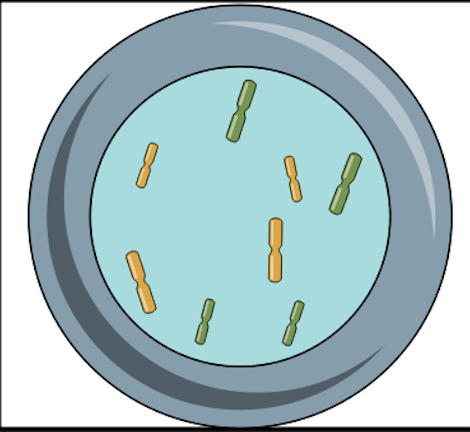

<Profaza

Despre profaza:
În profaza, celulele intră într-o stare pregătitoare pentru diviziunea celulară.
Cromatina (ADN-ul și proteinele sale asociate) se condensează în cromozomi vizibili sub microscop.
Nucleolii dispar, iar membrana nucleolară și membrana nucleară se descompun, permițând astfel accesul fusului mitotic (un aparat de fibră proteică) la cromozomi.
Cromozomii omologi (în celule diploide) sau perechi de cromatide identice (în celule haploide) se apropie și se aliniază pe linia de mijloc a celulei.